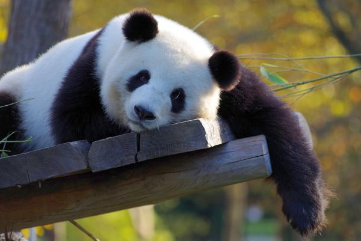

Gato
Gatos: Tienen la capacidad de girar sus orejas 180 grados, lo que les permite escuchar sonidos provenientes de diferentes direcciones sin mover la cabeza.
I love

Perritos
Perros: Su sentido del olfato es hasta 100,000 veces más sensible que el de los humanos. Pueden detectar enfermedades y cambios emocionales en las personas solo por el olor.
I love

Pandas
Pandas: Aunque su dieta es casi exclusivamente de bambú, los pandas tienen el sistema digestivo de un carnívoro, pero se adaptaron a comer plantas. ¡Pueden llegar a comer hasta 38 kg de bambú al día!
I love